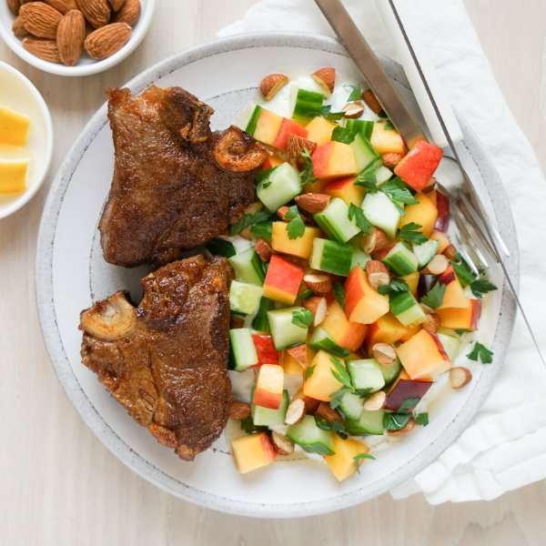

Spicy Seared Lamb Chops with Cucumbers, Peaches, Almonds & Yogurt

Prep Time
35 min
Nutrition (per serving)
698.9 kcalCalories
48.3 gProtein
36.3 gCarbs
42.1 gFat
Full nutrition table
| Calories | 698.9 kcal |
| Total fat | 42.1 g |
| Saturated fat | 13.4 g |
| Trans fat | 1.2 g |
| Cholesterol | 135.2 mg |
| Sodium | 141.5 mg |
| Carbohydrates | 36.3 g |
| Fiber | 7.3 g |
| Sugars | 25.6 g |
| Protein | 48.3 g |
| Potassium | 1235.1 mg |
| Calcium | 238.5 mg |
| Iron | 5.9 mg |
| Vitamin A | 654.1 IU |
| Vitamin C | 43.7 mg |
| Vitamin D | 2.8 IU |
Cookware
Ingredients
- ½ cupalmonds
- 2English cucumbers
- 1 small bunchItalian (flat-leaf) parsley
- 8lamb loin chops
- 2lemons
- 4peaches
- 1 ½ cupsplain Greek yogurt
- cayenne pepper
- coriander, ground
- cumin, ground
- extra virgin olive oil
- honey
- paprika
- salt
Steps
- Preheat a large skillet over medium heat.
- While the skillet heats up, roughly chop almonds.½ cup almonds
- Once the skillet is hot, add the almonds; cook, stirring constantly, until lightly browned, 2-3 minutes. Transfer to a medium bowl and set aside to cool. (Reserve skillet for later use.)
- Place spices in a small bowl. Stir to combine the spice rub.1 tsp salt
1 tsp paprika
1 tsp cumin, ground
1 tsp coriander, ground
½ tsp cayenne pepper - Return the skillet to medium-high heat.
- While the skillet heats up, pat the lamb chops dry with paper towels and place on a plate; season with the spice rub on both sides. (Reserve bowl for later use.)8 lamb loin chops
- Once the skillet is hot, add oil and swirl to coat the bottom. Add chops and sear, flipping once, until cooked through, 5-6 minutes. Remove to a clean plate, loosely cover with aluminum foil, and set aside to rest.1 tbsp extra virgin olive oil
- Meanwhile, wash and dry the fresh produce.2 lemons
1 small bunch Italian (flat-leaf) parsley
2 English cucumbers
4 peaches - Zest and juice one lemon into the reserved bowl. Cut remaining lemon into wedges and set aside for serving.
- Meanwhile, pick parsley leaves off the stems; discard stems. Mince half of the leaves and add to the bowl with the lemon. Roughly chop remaining leaves and set aside for serving.
- Add yogurt and salt to the bowl, then whisk to combine the lemony yogurt. Set aside.1 ½ cups plain Greek yogurt
½ tsp salt - Trim and medium dice cucumbers. Add to the bowl with the almonds.
- Quarter peaches lengthwise (around the pit); twist quarters to separate, then remove and discard pit. Medium dice the flesh and add to the bowl. Season the salad with salt, then stir to combine.¼ tsp salt
- Divide chops and lemony yogurt between plates. Top yogurt with the salad and reserved parsley, then drizzle with honey. Serve with lemon wedges for squeezing and enjoy!4 tsp honey